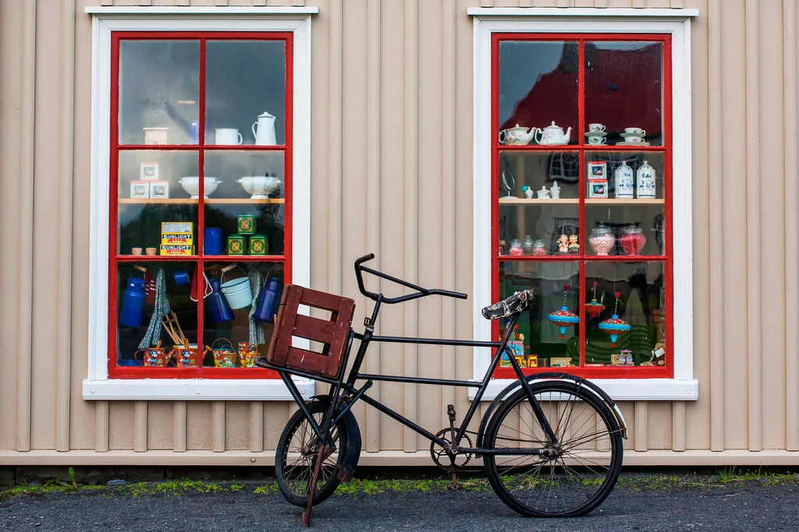
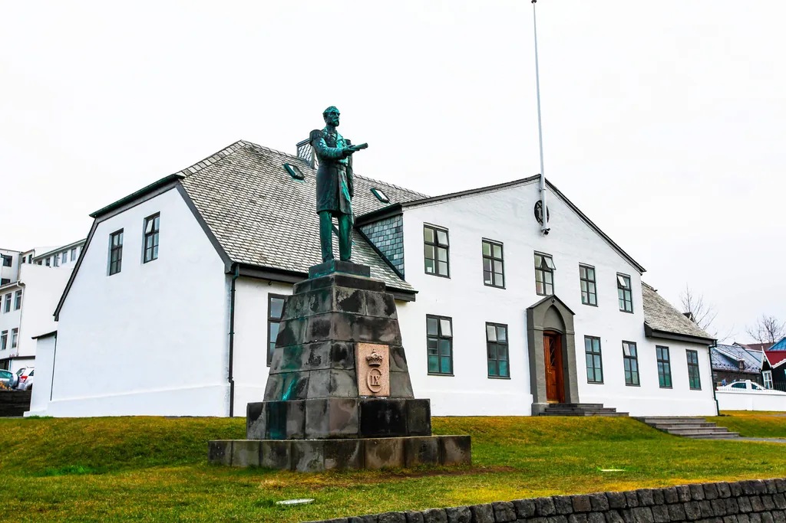

Reykjavik › Free walking tours
Free walking tours in Reykjavik: who runs them, what they cost and which departure to take
Three tip-based tours, five departure times, and four hours of December daylight to fit them into. The choice that matters is the hour, not the operator.
Reykjavik has free walking tours and they are genuinely good. Two hours, about two kilometres, run on the tip model: nobody charges you, and at the end you decide what it was worth. Three of them run daily between two platforms, and the guides live on what the group gives them.
This page is not here to talk you out of one. It is here to say who actually runs them, what people put in at the end, and which departure to pick — because in December Reykjavik has four hours of daylight and the tours do not all sit inside them. Our own TouringBee audio walk is the alternative and we will be upfront about where it loses.
At a glance
- How many
- Three tip-based tours run daily, across two booking platforms
- Price
- No fixed price. You decide at the end and pay then
- What people give
- GuruWalk's own guidance is €10–20 a head, about 2,000–4,000 ISK
- Duration
- Two hours each, about 2 km
- Departures
- 10:30 · 11:00 · 13:30 · 15:00 · 17:00, depending on the operator
- Booking
- Needed. CityWalk opens about five days ahead, up to six people per booking
- Access
- Wheelchair accessible, no age limit (CityWalk)
- Winter
- All run year-round, with more indoor stops
- The thing to check
- Which departure still sits in the light on your dates
Who actually runs them
Three tours, two platforms. CityWalk is the long-established one and the official SANDEMANs partner in Reykjavik; the other two are listed on GuruWalk, which rates Reykjavik tours 4.49 across 314 reviews.
| Tour | Departures | Length | Notes |
|---|---|---|---|
| CityWalk — the classic | 10:30, 13:30 | 2 h, ~2 km | Austurvöllur to the City Hall. Booking required, opens about five days ahead, six per booking |
| Sweet Streets (GuruWalk) | 11:00, 15:00 | 2 h | History and culture with an Icelandic sweets tasting. 4.61 from 98 reviews |
| History, Culture and Legends (GuruWalk) | 11:00, 17:00 | 2 h | Run by Rainbow Tours. Rated 4.83, but from only six reviews |
Listings change, guides come and go, and a tour with six reviews is not the same proposition as one with ninety-eight. Check what is actually bookable on your dates rather than trusting this table.
What "free" means here, and what people give
It means nobody takes your money before the walk. At the end the guide explains the model and you pay what you thought it was worth. CityWalk is explicit that the tour is non-commercial and unsponsored, and that each participant sets the price afterwards.
That is a real business, not a trick. Guides work for what the group gives them, which is why the good ones are very good indeed: the incentive is immediate and it is standing right in front of them.
So what do people actually give? GuruWalk publishes a figure: €10–20 per person, roughly 2,000–4,000 ISK, and up to €50 if the guide goes well beyond. Treat that as a floor and a ceiling rather than gospel — it comes from the platform whose guides receive the money, so it is guidance with an interest in it. The spread in reviews is wide in both directions; one walker on the Reykjavik listings describes leaving €150.
What makes the number harder to guess here than in Prague or Lisbon is that Iceland has no everyday tipping culture to anchor to. Service is included and tipping is not expected the way it is in the US, so a visitor arrives without an instinct for what is normal — on a walk where the tip is the payment.
Two practical things, then. Decide your number before you set off, so the end of a good morning is not a small social problem. And sort out how you will hand it over: one reviewer reported not managing to tip at all because none of the payment options worked for them. Cash never fails.
Which departure still sits in the light
Between the three tours the departures are 10:30, 11:00, 13:30, 15:00 and 17:00, two hours each. For most of the year that is just a question of what suits you. Around midwinter it becomes the main decision, because Reykjavik's daylight is short and it arrives late.
On 21 December the sun rises at 11:22 and sets at 15:29 — four hours and seven minutes in all. Here is where each departure falls:
| Departure | Runs | On the shortest day |
|---|---|---|
| 10:30 — CityWalk | 10:30–12:30 | Starts 52 minutes before sunrise; the first stops are in the dark |
| 11:00 — both GuruWalk tours | 11:00–13:00 | Starts 22 minutes before sunrise, then runs in daylight |
| 13:30 — CityWalk | 13:30–15:30 | Fully in daylight, ending one minute after sunset |
| 15:00 — Sweet Streets | 15:00–17:00 | Starts 29 minutes before sunset; almost all of it is after dark |
| 17:00 — Legends | 17:00–19:00 | Entirely after dark |
So the honest version is not that the tours miss the daylight. The 13:30 is perfectly placed for it — but it takes 49% of the day's light and leaves nothing after. Finish that tour and the light is gone; anything else you wanted to see by day had to happen between 11:22 and 13:30, and that window also contains breakfast.
Context, so this is not overstated: from 26 November to 24 January the sun rises after 10:30, which is the stretch where the morning departure starts in the dark. Outside those two months every departure above except the 17:00 sits comfortably in daylight, and in summer the question disappears entirely.
It is nobody's fault and no operator hides it. A fixed timetable at 64° north in December simply does this, and it is the one thing worth checking against your own dates before you build a day around it.
If you want a guide with a schedule that suits you
Private and small-group walks run at times you choose, and the big platforms list what is available on your dates alongside the day trips out of the city.
Compare Reykjavik tours Reykjavik attractionsWhat you actually get
Two hours on foot through the old centre, roughly two kilometres, with a live guide doing the history of Iceland, how Reykjavik turned from farm to town, and the elves-vikings-politics-nightlife material that makes a group laugh. Indoor stops are frequent in winter. There is no age limit, it is wheelchair accessible, and the winter route runs nine months of the year.
What a person gives you that a recording cannot: answers. You can ask why the parliament is that small, and get a reply shaped by the fact that you asked. A good guide also reads the group and changes the pace — and these listings are full of reviews naming the guide rather than the tour, which is usually the honest signal.
One practical note on the routes. They cover the parliament square, Harpa, the City Hall and the streets between them; some also reach Hallgrímskirkja and Rainbow Street. Two hours and two kilometres is a selection, not the whole city, so if there is one building you came for, check it is on that operator's route rather than assuming.
The building the walk starts at
Every one of these tours begins on or near Austurvöllur, and the first thing visitors say about the parliament house is that it looks too small to be one. It is a two-storey block of hewn Icelandic dolerite, finished in 1881 to a design by the Danish architect Ferdinand Meldahl, and it would pass for a provincial bank anywhere else in Europe.
The reason it looks that way is the opposite of modesty. For most of its life that building held nearly the entire apparatus of a country. The parliament, of course, but also the National Library, the antiquities collection that became the National Museum and later the National Gallery. The University of Iceland used its first floor from 1911 to 1940, and the President kept offices there until 1973. One building, one nation's institutions, because there was not yet anything else to put them in.
It is still shedding. Today only the debating chamber, a handful of meeting rooms and some senior staff are actually inside; the committee rooms, the members' offices and most of the secretariat have moved into the ordinary buildings around the square. So the small house on Austurvöllur is not a small parliament. It is what is left in the room after a century and a half of everything else moving out.
Look at the four outermost first-floor windows while the group is assembling. The reliefs above them are the four guardian spirits of Iceland: a dragon, a bird, a giant and a bull. They have been on the country's coat of arms ever since.
Where it is the wrong choice
Three situations, and none of them are about quality.
Your hours are fixed and theirs are too. If you land at noon, or your flight goes at four, or you are on a cruise call, the five departures either fit your day or they do not. Nobody is adding a sixth for you.
You want to stop. A group of twenty moves at the pace of a group of twenty. There is no pausing for forty minutes because a café looked good, and no doubling back.
You are booking late. CityWalk's bookings open about five days ahead and cap at six people. Deciding on the morning is risky, and a party of eight is an email rather than a click.

Free tour or audio guide, honestly
We sell the audio guide, so take this with that in mind — but the comparison is not close on either side, because they are not the same product.
| Free walking tour | TouringBee audio walk | |
|---|---|---|
| Price | A voluntary tip you set yourself | A fixed €9.99, known before you start |
| Starts | One of five fixed departures | Whenever you want |
| Length | 2 hours, fixed | 2–2.5 hours, pause as you like |
| Questions | Yes — a real person | No. This is the real loss |
| Company | A group, which some people want | You and whoever you brought, no strangers |
| Booking | Needed; CityWalk opens about five days ahead | None |
| Stops | The guide's route | 27, and you can skip them |
| Afterwards | Nothing to come back to | One payment, one year of access |
Take the free tour if you like groups, want to ask things, and the times fit. It is a good two hours and the people doing it are good at it.
Take the audio if your hours are awkward, you are travelling in the dark half of the year, you want to walk at your own speed, or you would rather know the price in advance. In December that last argument stops being about preference: being able to start at 11:30 and finish before the light goes is the whole difference between seeing the city and seeing the dark.
And the answer nobody puts on a comparison page: doing both is fine. The tour in the morning, the audio walk on another day for the parts it did not reach.
The audio guide
The thing you are buying is not a cheaper tour. It is the right to start at the hour that suits your day, in a city where in December there are only four hours of daylight to put it in.

TouringBee Reykjavik audio guide
- Start when you like. No fixed departure, no booking days ahead
- Works fully offline — no mobile data needed during the walk
- Pause whenever. Coffee, a shop, a church tower, then carry on
- One payment, one year. Walk it twice if the weather ruins the first go
Five mistakes
- Turning up without a booking. CityWalk asks for one and says people without it risk being turned away.
- Deciding the amount at the end, with no way to pay it. Pick your number before the walk and carry cash — card options do not always work.
- Booking the 10:30 in December. The sun rises at 11:22 around the solstice, so the first 52 minutes are before dawn. The 13:30 is the one that sits in the light.
- Assuming a free tour covers everything. Two hours and two kilometres is a selection, not the whole city. Check the route for the thing you came for.
- Dressing for walking. A guided tour stands still a lot. In an Icelandic wind that is a different clothing problem.
Common questions
Are the free walking tours in Reykjavik really free?
There is no fixed price and nobody takes payment up front. You decide what the tour was worth at the end and pay then. The model works and guides live on it — but it is not free either, and the amount is left entirely to you at the moment you are standing in a group with everyone else deciding too.
How much should you give after a free walking tour?
There is no official rate. GuruWalk, one of the two platforms these tours are booked through, publishes €10–20 per person — roughly 2,000–4,000 ISK — rising to about €50 for a guide who goes well beyond. That comes from the platform whose guides receive the money, so treat it as a range rather than a rule. Iceland has no everyday tipping culture to anchor to, so decide your number before you go and carry cash.
Do you need to book a free walking tour?
For CityWalk, yes: it asks for a booking and says people who turn up without one risk being turned away. Its bookings open roughly five days ahead and one covers up to six people, with larger groups emailing instead. That is when the window opens, not a deadline — later is fine if places remain.
What time do the free walking tours run?
Across the three tours: 10:30 and 13:30 with CityWalk, 11:00 and 15:00 with Sweet Streets, 11:00 and 17:00 with the Legends tour. Two hours each. Around midwinter the 13:30 is the one that sits fully in daylight; the 10:30 starts before sunrise and the 15:00 and 17:00 run largely in the dark.
Is a free walking tour better than an audio guide?
They are different products. A guide answers questions, makes jokes and reads the group; audio does not. An audio guide starts when you want, pauses for coffee and costs a number you know in advance. If you like groups and want a person, take the tour. If your hours are tight, or you are here in the dark months and want to pick your own, take the audio. Doing both is also fine.
Do free walking tours run in winter?
Yes, all of them run through the winter, with more indoor stops. CityWalk runs a winter version of its route for nine months of the year and says it has never cancelled for weather. Dress for standing still in wind rather than for walking: a guided tour stops a lot.
Continue exploring
- Reykjavik in one day — the route the hours actually allow
- Hallgrímskirkja and the tower — tickets, hours and the 16:45 deadline
- Northern lights — when the sky is dark enough and where to stand
- Sky Lagoon — prices, opening hours and what time to book
- Keflavík airport to the city — transfers, and what to do before check-in
- The complete Reykjavik guide — the walk, the day trips and the seasons
- All Reykjavik guides
The short version
The free walking tour is good, it is properly run, and the tip model is honest. Book it, turn up ten minutes early, and decide your number beforehand so the end of it is not awkward. Between February and November the times are fine.
In the dark months, check the departures against the sunrise before anything else. If 10:30 and 13:30 do not work for your day, that is the case for the audio walk — not because it is cheaper, but because it starts when you do.
Four hours of daylight, five fixed departures
Only one of them leaves you anything afterwards. Or start the walk at the hour that does.
TouringBee publishes a self-guided audio guide to Reykjavik, which is what we compare here against the guided tours. We try to show the strengths and the limits of both formats fairly. Some links on this page are affiliate links — if you book through them we may earn a commission at no extra cost to you. Departure times, duration, routes, booking rules, ratings and the winter schedule were checked against the operators' own listings on 20 October 2026 and change often; confirm before you travel. Sunrise and sunset are calculated for Reykjavik (64.15° N, 21.94° W). Sources: citywalk.is, guruwalk.com.